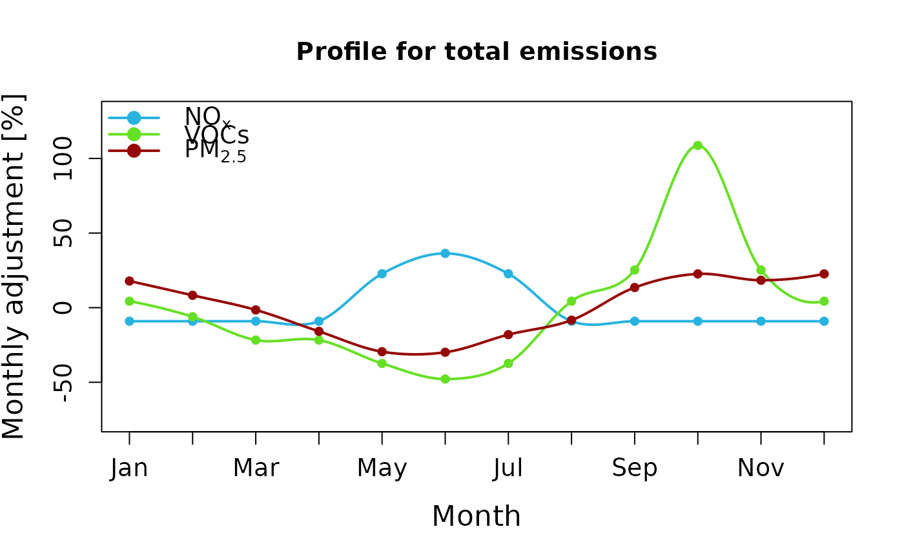

Set of monthly profiles that represents the mean activity for each month of the year.
- month
month (1 to 12)
- VOC
profile for total emissions of VOC
- NOx
profile for total emissions of NOx
- PM
profile for total emissions of PM
Usage
data(monthly)Details
Profiles from Schuch et al. (2026B) based on WRF-Chem numerical experiments for 2012-2016 and observations available for for MASP and MARJ.
Note
The profile is normalized by month (but is balanced for a complete year) it means anual_emission x profile = monthly_emission.
References
Daniel Schuch, Y. Zhang, S. Ibarra-Espinosa, M. F. Andradede, M. Gavidia-Calderónd, and M. L. Belle. Multi-Year Evaluation and Application of the WRF-Chem Model for Two Major Urban Areas in Brazil part II: Multi-Year evaluation and urban-centric analysis. Atmospheric Environment, 2026B. doi:10.1016/j.atmosenv.2025.121632
Examples
# load the data
data(monthly)
# make a plot
cols <- c("NOx" = "#28B2E0","VOC" = "#66E024","PM" = "#960606")
plot(NA, xlim = c(1,12), ylim = c(-75,130),
xaxt = "n", xlab = "Month",main = "Profile for total emissions",
ylab = "Monthly adjustment [%]",cex.lab = 1.4, cex.axis = 1.2)
axis(1, at = 1:12, labels = month.abb, cex.axis = 1.2)
for (v in c("NOx", "VOC", "PM")) {
y <- monthly[[v]] * 100 - 100 # convert to % change
points(monthly$month, y, col = cols[v], pch = 16)
lo <- loess(y ~ month, data = monthly, span = 0.4)
xs <- seq(1,12, length.out = 200)
lines(xs, predict(lo, newdata = data.frame(month = xs)),
col = cols[v], lwd = 2)
}
legend("topleft", legend = c(expression(NO[x]), "VOCs", expression(PM[2.5])),
col = cols, pch = 16, lwd = 2, pt.cex = 1.5, bty = "n",cex = 1.2)
